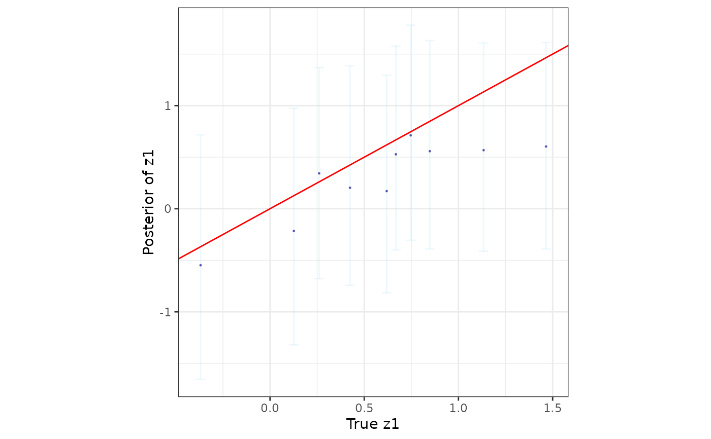

Prediction of latent process at new spatial or temporal locations
Source:R/predict.R
posteriorPredict.RdA function to sample from the posterior predictive distribution of the latent spatial or spatial-temporal process.
Arguments
- mod_out
an object returned by any model fit under fixed hyperparameters or using predictive stacking, i.e.,
spLMexact(),spLMstack(),spGLMexact(),spGLMstack(),stvcGLMexact(), orstvcGLMstack().- coords_new
a list of new spatial or spatial-temporal coordinates at which the latent process, the mean, and the response is to be predicted.
- covars_new
a list of new covariates at the new spatial or spatial-temporal coordinates. See examples for the structure of this list.
- joint
a logical value indicating whether to return the joint posterior predictive samples of the latent process at the new locations or times. Defaults to
FALSE.- nBinom_new
a vector of the number of trials for each new prediction location or time. Only required if the model family is
"binomial". Defaults to a vector of ones, indicating one trial for each new prediction.
Value
A modified object with the class name preceeded by the identifier
pp separated by a .. For example, if input is of class spLMstack, then
the output of this prediction function would be pp.spLMstack. The entry
with the tag samples is updated and will include samples from the posterior
predictive distribution of the latent process, the mean, and the response at
the new locations or times. An entry with the tag prediction is added
and contains the new coordinates and covariates, and whether the joint
posterior predictive samples were requested.
Author
Soumyakanti Pan span18@ucla.edu,
Sudipto Banerjee sudipto@ucla.edu
Examples
set.seed(1234)
# training and test data sizes
n_train <- 100
n_pred <- 10
# Example 1: Spatial linear model
# load and split data into training and prediction sets
data(simGaussian)
dat <- simGaussian
dat_train <- dat[1:n_train, ]
dat_pred <- dat[n_train + 1:n_pred, ]
# fit a spatial linear model using predictive stacking
mod1 <- spLMstack(y ~ x1, data = dat_train,
coords = as.matrix(dat_train[, c("s1", "s2")]),
cor.fn = "matern",
params.list = list(phi = c(1.5, 3, 5), nu = c(0.75, 1.25),
noise_sp_ratio = c(0.5, 1, 2)),
n.samples = 1000, loopd.method = "psis",
parallel = FALSE, solver = "ECOS", verbose = TRUE)
#>
#> STACKING WEIGHTS:
#>
#> | phi | nu | noise_sp_ratio | weight |
#> +----------+-----+------+----------------+--------+
#> | Model 1 | 1.5| 0.75| 0.5| 0.000 |
#> | Model 2 | 3.0| 0.75| 0.5| 0.000 |
#> | Model 3 | 5.0| 0.75| 0.5| 0.404 |
#> | Model 4 | 1.5| 1.25| 0.5| 0.076 |
#> | Model 5 | 3.0| 1.25| 0.5| 0.520 |
#> | Model 6 | 5.0| 1.25| 0.5| 0.000 |
#> | Model 7 | 1.5| 0.75| 1.0| 0.000 |
#> | Model 8 | 3.0| 0.75| 1.0| 0.000 |
#> | Model 9 | 5.0| 0.75| 1.0| 0.000 |
#> | Model 10 | 1.5| 1.25| 1.0| 0.000 |
#> | Model 11 | 3.0| 1.25| 1.0| 0.000 |
#> | Model 12 | 5.0| 1.25| 1.0| 0.000 |
#> | Model 13 | 1.5| 0.75| 2.0| 0.000 |
#> | Model 14 | 3.0| 0.75| 2.0| 0.000 |
#> | Model 15 | 5.0| 0.75| 2.0| 0.000 |
#> | Model 16 | 1.5| 1.25| 2.0| 0.000 |
#> | Model 17 | 3.0| 1.25| 2.0| 0.000 |
#> | Model 18 | 5.0| 1.25| 2.0| 0.000 |
#> +----------+-----+------+----------------+--------+
#>
# prepare new coordinates and covariates for prediction
sp_pred <- as.matrix(dat_pred[, c("s1", "s2")])
X_new <- as.matrix(cbind(rep(1, n_pred), dat_pred$x1))
# carry out posterior prediction
mod.pred <- posteriorPredict(mod1, coords_new = sp_pred, covars_new = X_new,
joint = TRUE)
# sample from the stacked posterior and posterior predictive distribution
post_samps <- stackedSampler(mod.pred)
# analyze posterior samples
postpred_z <- post_samps$z.pred
post_z_summ <- t(apply(postpred_z, 1, function(x) quantile(x, c(0.025, 0.5, 0.975))))
z_combn <- data.frame(z = dat_pred$z_true, zL = post_z_summ[, 1],
zM = post_z_summ[, 2], zU = post_z_summ[, 3])
library(ggplot2)
ggplot(data = z_combn, aes(x = z)) +
geom_errorbar(aes(ymin = zL, ymax = zU), width = 0.05, alpha = 0.15, color = "skyblue") +
geom_point(aes(y = zM), size = 0.25, color = "darkblue", alpha = 0.5) +
geom_abline(slope = 1, intercept = 0, color = "red", linetype = "solid") +
xlab("True z1") + ylab("Posterior of z1") + theme_bw() +
theme(panel.background = element_blank(), aspect.ratio = 1)
